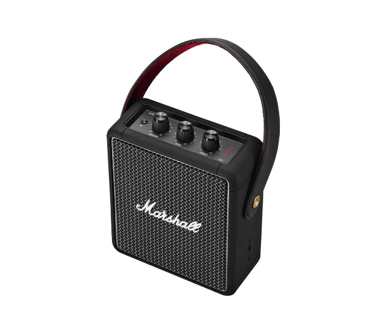
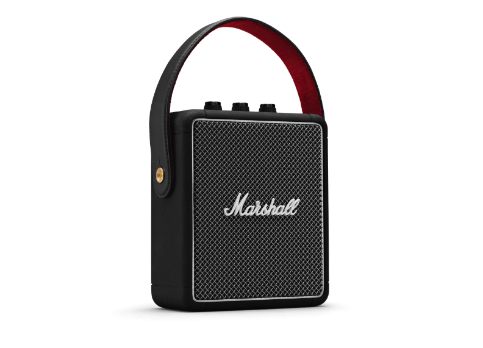

STOCKWELL II
Pesant seulement 1,4 kg, Stockwell II impose sa puissance malgré sa petite morphologie. Dotée du son True Stereophonic, elle offre une expérience multidirectionnelle qui vous immerge dans la musique, en intérieur comme en extérieur.

PLUS DE 20 HEURES DE SON SANS RECHARGER LA BATTERIE
Stockwell II offre plus de 20 heures de son sans recharger la batterie. Sa petite morphologie et sa bandoulière permettent de la transporter très facilement.
